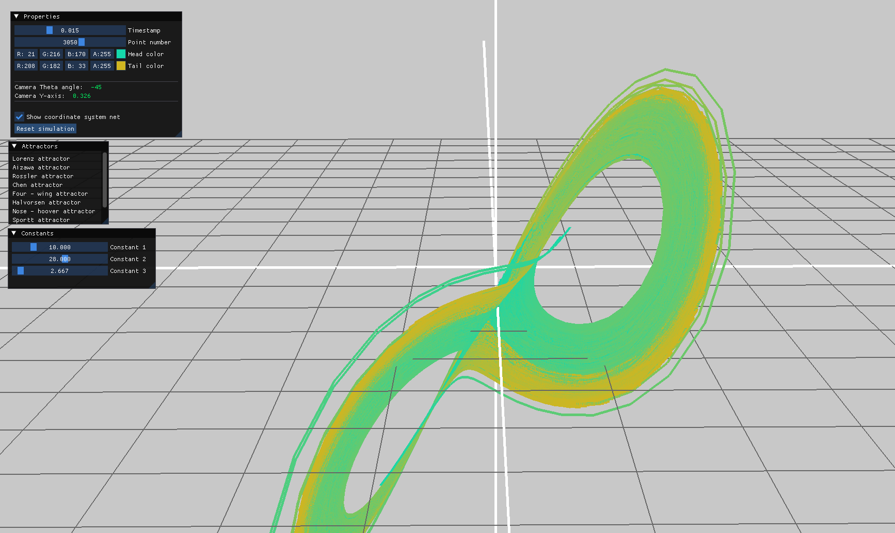
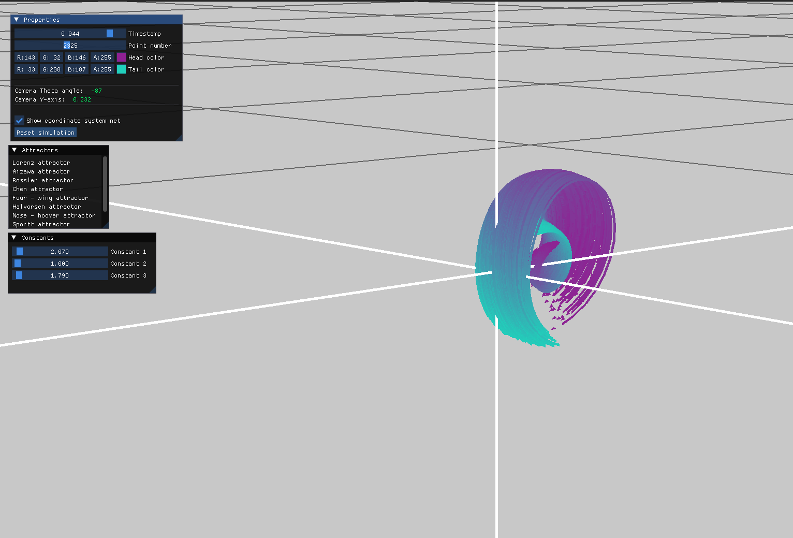
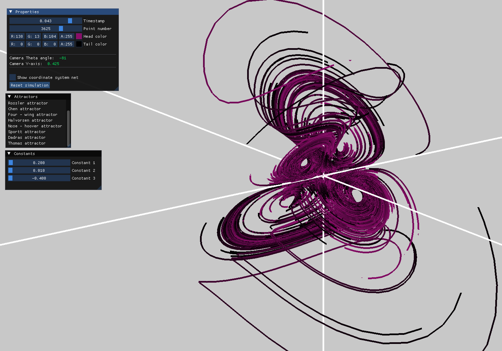
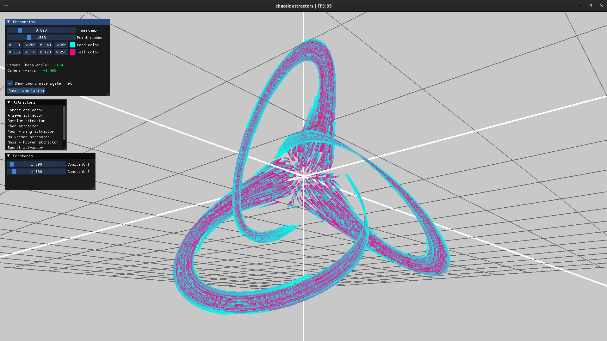

Interactive showcase that presents several well-known chaotic attractors from dynamical systems, including the Lorenz, Aizawa, Sprott, Chen, and others. Each visualization demonstrates the complex, unpredictable behavior that arises from relatively simple nonlinear equations, offering insight into chaos theory and nonlinear dynamics.
Tech Stack
OpenGL
C++
GLM
Dear ImGui
GLFW
Screenshots




Key Code Snippet
// function to update point position based
on chosen attractor, delta time and some constants using Runge-Kutta method
glm::vec3 Point::update(int chosen_equation, float dt, float *constants, float delta) {
float x = this->x;
float y = this->y;
float z = this->z;
float h = dt * delta * 60.0f;
// RK4 stages
glm::vec3 k1 = compute_derivatives(chosen_equation, x, y, z, constants);
glm::vec3 k2 = compute_derivatives(chosen_equation, x + h * k1.x / 2, y + h * k1.y / 2, z + h * k1.z / 2, constants);
glm::vec3 k3 = compute_derivatives(chosen_equation, x + h * k2.x / 2, y + h * k2.y / 2, z + h * k2.z / 2, constants);
glm::vec3 k4 = compute_derivatives(chosen_equation, x + h * k3.x, y + h * k3.y, z + h * k3.z, constants);
glm::vec3 derivative = (k1 + 2.0f * k2 + 2.0f * k3 + k4) / 6.0f;
this->x += h * derivative.x;
this->y += h * derivative.y;
this->z += h * derivative.z;
return derivative;
}
Project Comments
The idea behind this project was to become familiar with the concept of chaotic attractors and to see how different parameters impact their trajectories.
One of the key challenges included using numerical integration techniques, where initially Euler's method was used, but later it was replaced by Runge-Kutta which indeed did show improved solution stability for some of the attractors. Another challenge worth mentioning was rendering attractor trail and head (represented with triangle) using OpenGL.
It is important to note that some improvements could be made, such as GPU parallelization of trajectory calculations using CUDA or compute shaders. Even more importantly, the use of instancing would likely become the next bottleneck when rendering more trajectories.
All in all, I think this was a good project for exploring the basics of chaos theory and gaining a solid grasp of OpenGL fundamentals.